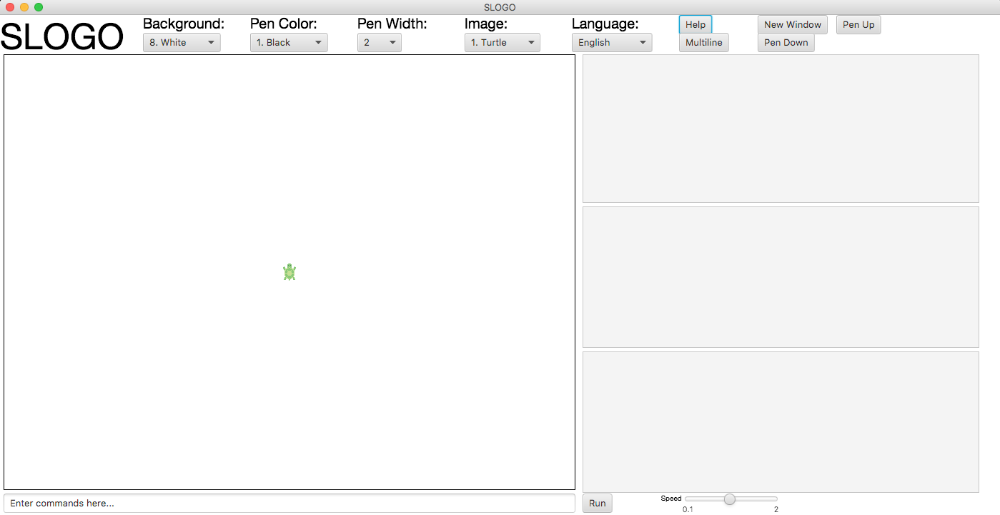

Introduction to SLogo.
SLogo is a programming language environment designed to teach elementary programmers basic
fundamentals about variables, commands, for loops, if-else statements, logic and more!
The following guide will help show you how to use the SLogo GUI to write commands to move the
turtle on screen. As you go from more simple commands to complex ones, you can create more interesting
results.
The environment.

Commands are entered in the bar at the bottom, and then the turtle will move within the display
window accordingly. The three gray panels on the right respectively show:
- Command history: the list of commands that were just run, also re-executable with a click.
- User-defined commands: the list of commands that you defined as a user. Commands defined by the user
can often represent a process you want to write by shorthand, i.e. a chain of base commands.
- Existing variables: variables can be saved to store data that must be used in the future by other
commands.
To run the commands typed, simply press the Run button.
On the top, there are a bunch of drop-down boxes with expandable options including changing the background color, pen color,
the image displayed, and the language in which commands are typed.
There is also a multiline input where multiple commands can be entered before execution, and an option to create a new SLogo
instance, as well as additional options.
Links to more help.
SLogo Project
SLOGO Team 9: Addison Howenstine, Phil Foo, Noah Over, Harshil Garg